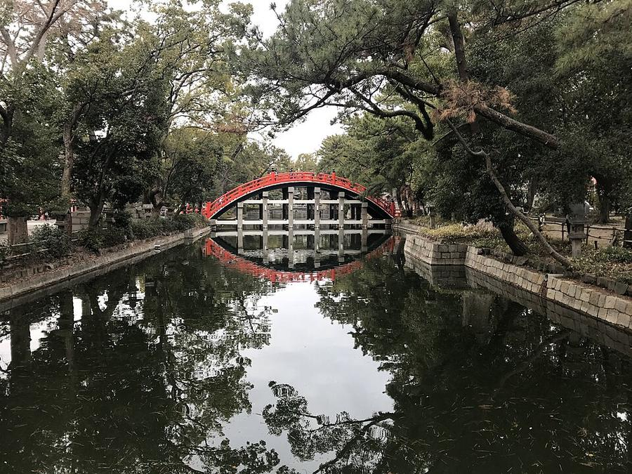
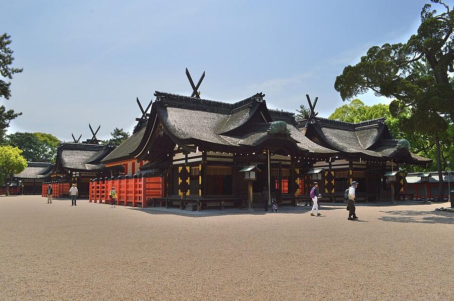
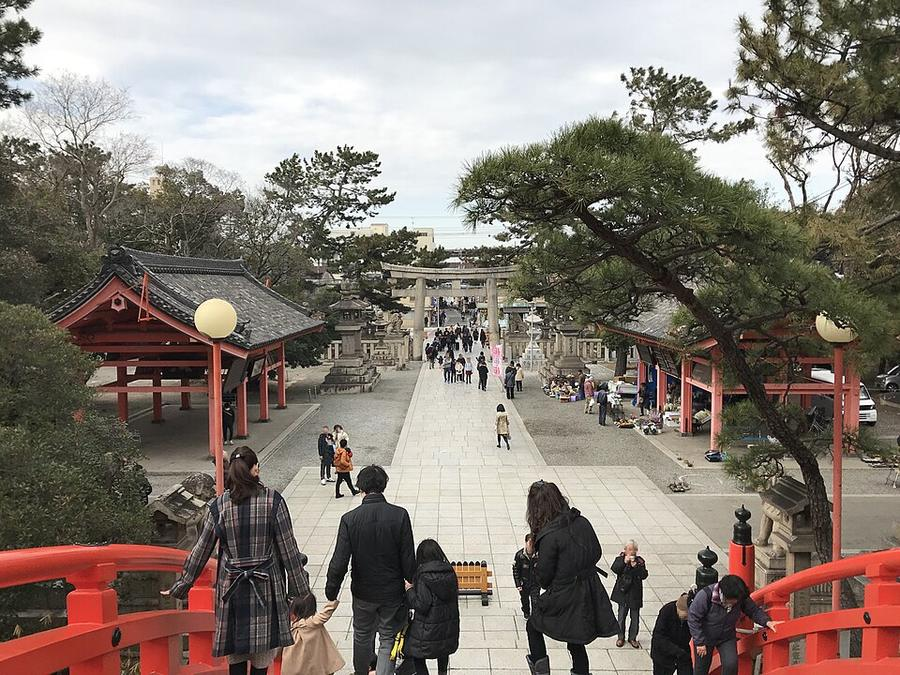
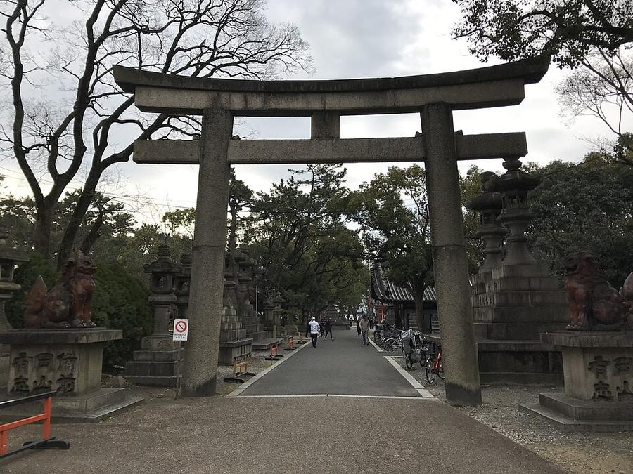

13Sumiyoshi Taisha
住吉大社 · Ещё в городе




Главное святилище всех храмов Sumiyoshi в Японии, по истории святилища божества почитаются здесь с 211 года. Четыре главных зала (нынешние - 1810 года) - национальное сокровище, по ним назван отдельный стиль архитектуры святилищ, Sumiyoshi-zukuri.
Вход через крутой арочный мост Sorihashi над прудом. Тихо, просторно, приходят местные. Под открытым небом, поэтому на сухую погоду, а внешние ворота в октябре закрывают в 16:00.
| Часы | октябрь-март: внешние ворота 6:30-16:00, у главных залов до 17:00 |
|---|---|
| Вход | бесплатно |
| Наши даты | открыто, событий 24-26.10 нет |
| На месте | 40-60 мин |
| Дождь | 🌳 под открытым небом, лучше без дождя |
Источник часов и цен: sumiyoshitaisha.net (офиц.)
Как добраться от отеля
- Метро Midosuji до Namba (9 мин), пересадка на Nankai (~7 мин пешком внутри Namba), Nankai main line (南海本線) на Wakayamashi, платформа 7: 5 остановок до Sumiyoshitaisha, 9 мин. От станции 3 мин.
Видео


Рядом
Фото: Wikimedia Commons, автор и лицензия под каждым. Поезда: Yahoo!乗換案内 на 24-26.10.2026, пешие отрезки: OSRM. Часы и цены проверены 24.10.2026 03:16 JST. ← ко всем местам